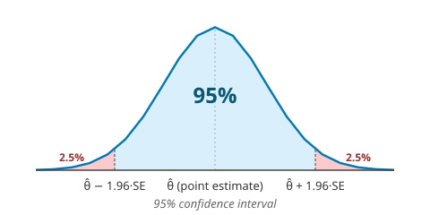

ברוכים הבאים לקורס רגרסיה
בכל שאלה — חומר, תרגול, פרויקט, או רעיון שצף תוך כדי — אל תהססו לפנות אליי במייל: raze@ariel.ac.il.
לאורך הסמסטר נצא למסע מ-"מה הנתונים מנסים להגיד לי?" ל-"איך אני בונה מודל שיודע לחזות?". נתחיל ברגרסיה לינארית הקלאסית — שאיתה אפשר לחזות גובה, מחירים, חומרת תאונה. משם נעלה למודלים מתוחכמים יותר: לוגיסטי (כן/לא — האם המכונה תיכשל?), פואסון (כמה תאונות יקרו החודש?), ובסוף בינומי שלילי — כשהפואסון לא מספיק.
הקורס בנוי כך שכל שיעור משלב תיאוריה (למה זה עובד) עם hands on (איך זה נראה בקוד). בסוף הסמסטר יהיה לכם ארגז כלים אמיתי.
בשיעור הראשון נכיר את רגרסיה לינארית — הכלי הסטטיסטי הבסיסי ביותר. נראה איך עובדים עם statsmodels, נחזה תופעה אמיתית מהשטח, ונבחן עד כמה הצלחנו.
מה נעשה היום
- הצגת משוואת רגרסיה
- OLS — Ordinary Least Squares
- הוספת עמודת constant ל-intercept
- הצגה אלגברית של המשוואה
- $R^2$ ובדיקת הנחות המודל
- בדיקת מובהקות (hypothesis testing) על הפרמטרים
הספרייה שאיתה נעבוד — statsmodels
statsmodels היא הספרייה הסטטיסטית הסטנדרטית של פייתון. היא מתמחה במודלים סטטיסטיים קלאסיים — רגרסיה, ANOVA, סדרות זמן — ומחזירה דוחות מפורטים: מקדמים, p-values, רווחי סמך, בדיקות דיאגנוסטיות.
בניגוד ל-scikit-learn שמתמקדת בשאלת "מה החיזוי?", statsmodels עונה על "מה משמעות כל פרמטר ואם המודל בכלל מתאים". זו הספרייה שתלווה אותנו לאורך כל הקורס.
שאלת כיתה — מפעל לזיקוקי דינור
במפעל לייצור זיקוקי דינור עובדים מתמודדים עם חומרים מסוכנים. לכל עובד מספר שונה של שנות ניסיון, ומדי פעם מתרחשות פציעות בעבודה. החומרה מדורגת בציון 0–100.
המשימה: בנו מודל שחוזה את חומרת הפציעה (Y) כתלות בשנות הניסיון (X).
הדאטה: 45 נקודות, X מ-2 עד 12 שנים. עמודת intercept נוספת אוטומטית על-ידי sm.add_constant — נחזור לזה בפרק 3.
הריצה הראשונה של מודל. ה-summary() מחזיר הרבה שדות — נסתכל על 4 העיקריים.
סדר קריאה מה-summary
- $R^2 = 0.718$ — "72% מהשונות בחומרה מוסברת על-ידי ניסיון."
- coefs: $\hat{b}_0 = 99.95$, $\hat{b}_1 = -3.05$ — "מקדם שלילי: יותר ניסיון = פחות חומרה. עקבי?"
- p-values $= 0.000$ — "הקשר מובהק סטטיסטית, לא צירוף מקרים."
- 95% CI (העמודות
[0.025 0.975]) — לדוגמה $\hat{b}_1 \in [-3.6, -2.5]$. הטווח לא כולל את $0$ ⇒ אנחנו בטוחים שהפרמטר שונה מ-$0$.
📊 העשרה: רווח סמך, מובהקות, וההתפלגות שמאחורי המספרים
מה זה "סטטיסטי"? אנחנו עובדים עם מדגם בן 45 עובדים, לא עם כל אוכלוסיית עובדי המפעלים בעולם. כל אומדן שאנחנו מחשבים — $\hat{b}_1$, $R^2$, וכו' — הוא הערכה ל-"ערך האמיתי" באוכלוסייה. סטטיסטיקה היא הכלי שמודד כמה אי-ודאות יש באומדן הזה.
מה זה רווח סמך (Confidence Interval)? אם נדגום שוב ושוב 45 עובדים מאותה אוכלוסייה ונחשב $\hat{b}_1$ בכל פעם — נקבל ערכים שונים בכל דגימה (כי הדאטה עצמו משתנה). ההתפלגות של האומדנים האלה נורמלית בקירוב, סביב הערך האמיתי. רווח סמך 95% הוא הטווח שתופס 95% מההתפלגות הזו:

הנוסחה:
$SE$ היא השגיאה הסטנדרטית של האומדן (מופיעה ב-summary בעמודת std err). $t_{\alpha/2} \approx 1.96$ ל-95% רווח סמך בדגימות גדולות.
רמת מובהקות ($\alpha$) — הסיכון לטעות מסוג ראשון: לדחות את ההשערה ש-$b_1 = 0$ בעוד שבמציאות $b_1$ באמת $0$. הסטנדרט הוא $\alpha = 0.05$ (5%). אם $\text{p-value} < \alpha$ ⇒ אנחנו דוחים ואומרים "הקשר אמיתי".
הקשר בין השלושה: רווח סמך 95% ו-p-value עם סף $0.05$ הם אותו רעיון מנקודות מבט שונות:
- רווח סמך 95%: "הטווח שתופס את הפרמטר ב-95% מהדגימות החוזרות."
- $\text{p-value} < 0.05$: "הסיכוי לקבל אומדן רחוק כל-כך מ-$0$ אם באמת $b_1 = 0$ הוא פחות מ-5%."
- אם $0$ לא בתוך רווח הסמך ⇔ $\text{p-value} < 0.05$. הם תמיד יסכימו ביניהם.
לא בהכרח — תלוי במה שואלים.
- מבחינה סטטיסטית: המודל מובהק. $p = 0.001$ אומר שהסיכוי שמקדם בגודל הזה התקבל במקריות (כשבאמת $b_1 = 0$) הוא 0.1% בלבד. כלומר: יש קשר אמיתי בין $X$ ל-$Y$, לא רעש מקרי.
- מבחינה מעשית: האפקט זניח. $b_1 = -0.05$ אומר שכל שנת ניסיון נוספת מורידה את חומרת הפציעה ב-$0.05$ בלבד. בקנה מידה $0$–$100$ — זה כמעט שום דבר. אחרי 20 שנות ניסיון נוספות, החומרה תרד ב-$1$ נקודה בודדת.
- המסקנה: p-value מודד את עצם קיום הקשר, לא את גודלו. עם דאטה גדול מספיק, גם אפקטים זעירים מאוד יראו מובהקים. מודל "טוב" צריך גם מובהקות סטטיסטית וגם אפקט בעל משמעות מעשית — שני הדברים, לא אחד.
sm.OLS(...).fit() + summary). אחר כך תא 8 (scatter + regression line).
המטרה: לחבר את statsmodels לנוסחה האנליטית — אין קסם.
ה-hat (כובע) מסמן חיזוי, לא ערך אמיתי. ההבדל: $b_0$ = פרמטר אמיתי בעולם, $\hat{b_0}$ = ההערכה שלנו ממדגם.
נוסחאות ה-OLS
כשהסטודנט מריץ ידנית בתא 14 — התוצאות זהות לחלוטין ל-summary בתא 9. זה הרגע ש-statsmodels מפסיק להיות "קוסם".
ראינו ש-$R^2 = 0.718$. אבל מה זה אומר בפועל? המטרה כאן: $R^2$ כיחס בין שונויות — לא רק "מספר".
שני גרפים זה לצד זה
- שמאל (SST): הקו האופקי = ממוצע $Y$. הקווים הסגולים = מרחקים מהממוצע. זה הסך — total variation.
- ימין (SSR): אותן נקודות, אבל הקו = קו רגרסיה. הקווים הסגולים הרבה יותר קצרים. זה מה שלא הצלחנו להסביר — residual.
אם הקו מוסיף אינפורמציה → $SSR$ קטן מ-$SST$ → $R^2$ קרוב ל-1.
המודל אומן על נתונים בטווח 2–12 שנים. עכשיו ננסה לחזות פנימה ומחוץ לטווח, ונראה מה קורה.
| Experience | חיזוי | סטטוס |
|---|---|---|
| 10 שנים | ~69 | ✅ בתוך הטווח (אינטרפולציה) — סביר |
| 30 שנים | ~8.5 | ⚠️ מחוץ לטווח (אקסטרפולציה) — ספקולטיבי |
טיפ חשוב — אינטרפולציה vs. אקסטרפולציה
- אינטרפולציה: $x$ בתוך טווח האימון (כאן: 2–12) — בד"כ סביר.
- אקסטרפולציה: $x$ מחוץ לטווח — מסוכן. אין הוכחה שהקשר הליניארי ממשיך.
$R^2 = 0.72$. זה טוב או רע?
תלוי בתחום
- מכניקה / פיזיקה: 0.72 נחשב נמוך. מודלים שם מגיעים ל-0.99+.
- רפואה / מדעי החברה: 0.72 מעולה. בני אדם רועשים יותר מקפיצים ומסות.
ההקשר חשוב מהמספר.
OLS אופטימלי רק אם 3 הנחות מתקיימות. אם הן לא — לא אומר שהמודל "לא עובד", אבל הסקת המסקנות (p-values, רווחי סמך) לא מהימנה.
3 ההנחות
- ליניאריות — הקשר באמת לינארי (לא קשת/U).
- שונות קבועה (Homoscedasticity) — השגיאה לא גדלה/קטנה לאורך $X$.
- נורמליות — היסטוגרמת השגיאות נראית כמו פעמון.
1. Linearity — בדיקה ויזואלית
נקודות סביב הקו? residuals אקראיים סביב 0? אם יש מגמה (קשת/U) — לא ליניארי. במקרה שלנו: אקראי, OK.
2. Homoscedasticity — שונות קבועה
השגיאות גדלות/קטנות לאורך $X$? אם כן — heteroscedasticity → תקלה. צורת "משפך" קלאסית. במקרה שלנו: אקראי, OK.
3. Normality — שגיאות נורמליות
היסטוגרמת השגיאות צריכה להיראות כמו פעמון. במקרה שלנו לא מושלם — יש זנבות. אבל קרוב מספיק.
טיזר לשיעור 2
בשיעור הבא נראה מה עושים כש-הנחת הליניאריות לא מתקיימת — נכיר טרנספורמציות.
5 נקודות לזכור
- רגרסיה לינארית = OLS = הקו האופטימלי.
- ב-statsmodels:
sm.OLS(y, X).fit(); קוראים אתsummary(). - $R^2$ = איכות התאמה — תלוי תחום.
- אקסטרפולציה = זהירות מחוץ לטווח האימון.
- 3 הנחות שצריכות להתקיים: ליניאריות · שונות קבועה · נורמליות.
בשיעור הבא — Transformations
מה אם הקשר לא לינארי? נכיר טרנספורמציות (log, sqrt, polynomial features) ונראה איך לזהות מתי כל אחת מתאימה.